Projects — the SPIN Unit repository
YRPROJECTCLIENT
LENSDOCS
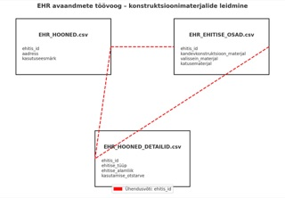
2026EHR Building Registry Data Pipeline — TalTechSpace—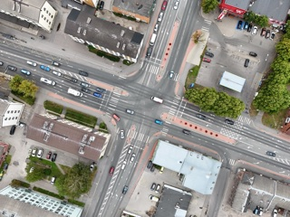
2026Pärnu Parking Analysis & StrategyCity of PärnuMobilityPDF ×2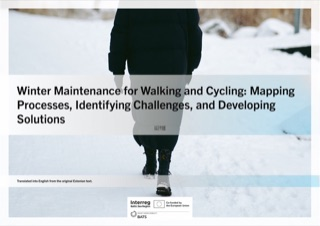
2025Winter Maintenance for Walking and Cycling — Harju CountyAssociation of Municipalities of Harju CountyMobilityPDF ×2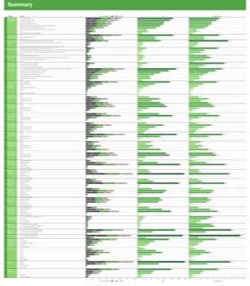
2025Bolt Drive — Car-Sharing Mode-Shift SurveyBoltMobilityPDF ×2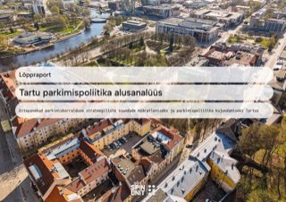
2024Tartu Parking Policy Baseline AnalysisCity of TartuMobilityPDF ×2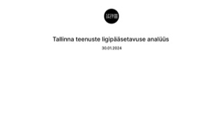
2024Tallinn Service Accessibility AnalysisTallinna StrateegiakeskusSocietyPDF ×2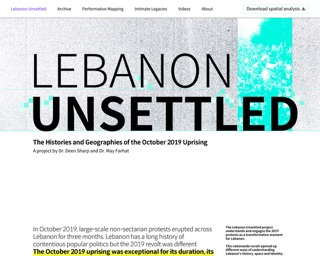
2024Lebanon UnsettledMobilityPDF ×4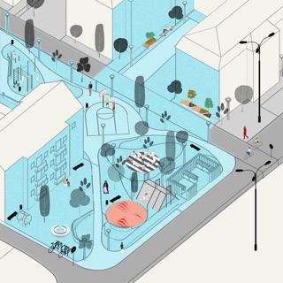
2023Block 1 — Reimagining a Socialist-Era Superblock in PrishtinaUNDPSpacePDF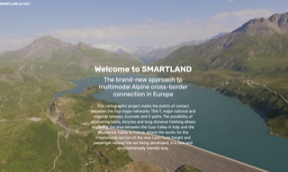
2023SMARTLAND by TELT — Interactive StorymapTELTSpacePDF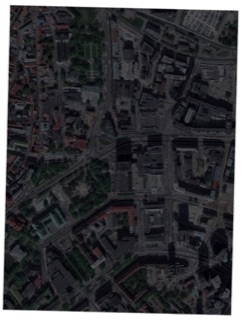
2023Tallinn parking map——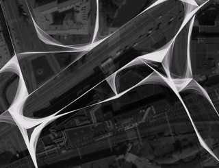
2022Stockmann Building — Rail Baltica Pedestrian Flow AnalysisUnconfirmedMobilityPDF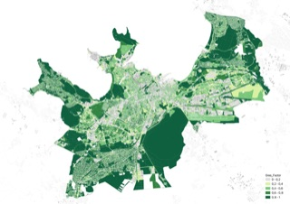
2022Tallinn Green Factor (Rohefaktor)City of TallinnSpacePDF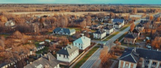
2022National Study of Shrinking Patterns in EstoniaEstonian Ministry of Economic Affairs and CommunicationsSocietyPDF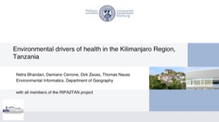
2022RIPA2TAN — Environmental Drivers of Health in the Kilimanjaro RegionPhilipps-Universität MarburgSocietyPDF2022Ida-Viru County Shrinking Cities AnalysisEstonian Ministry of FinanceSociety—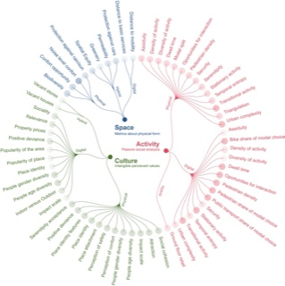
2022Experimentation Evaluation Toolkit — Ylä-Malmi PilotForum Virium HelsinkiSpacePDF ×2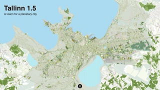
2022Tallinn 1.5 — A Plan for a Planetary CityEstonian Centre of ArchitectureSocietyPDF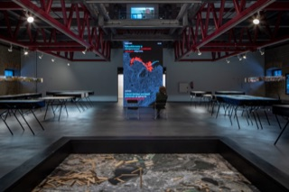
2021City Unfinished — Museum ExhibitionSociety—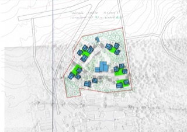
2021Tuusula - Harismaki development planTuusula——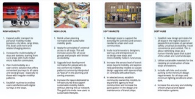
2021The New Modal — Mobility Equity in Harju CountyHarju County Association of Local GovernmentsMobilityPDF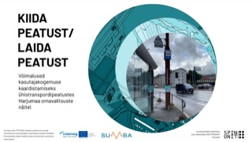
2021Kiida Peatust / Laida Peatust — Crowdsourced Bus Stop SurveyBaltic Environmental Forum EstoniaMobilityPDF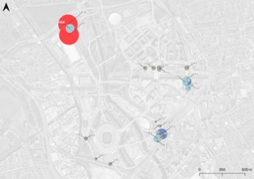
2021Fyma × SPIN Unit — Mobility KPIs for Queen Elizabeth Olympic ParkFymaMobilityPDF2021Research on Female Entrepreneurship——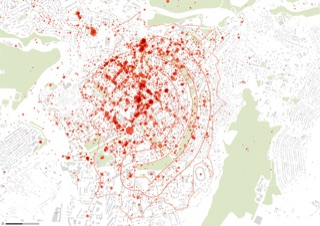
2020Circular Park — YerevanUNDPSpacePDF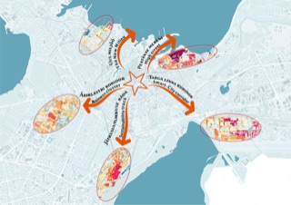
2020metaYLE — Ülemiste Mobility NudgeCity of TallinnMobilityPDF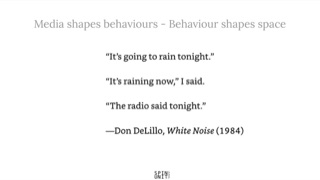
2020Ethical Use of Urban DataStrelka KBSpacePDF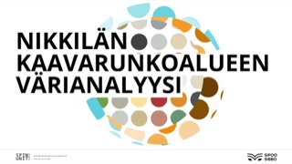
2020Nikkilä Colour AnalysisMunicipality of SipooSpacePDF ×2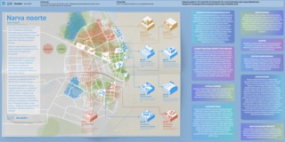
2020ReCenter Narva — Youth Vision for Narva 2035City of NarvaSpacePDF ×2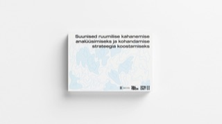
2020A Research Pilot for Shrinking CitiesEstonian Ministry of FinanceSocietyPDF ×3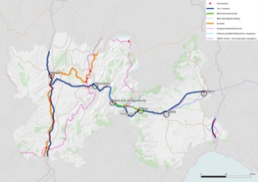
2020Lyon-Turin Multimodal Network MapsTELTMobility—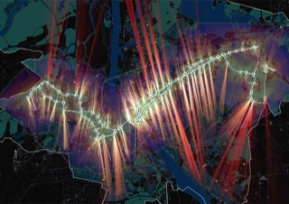
2020Riga Mobility MetricsDemos HelsinkiMobility—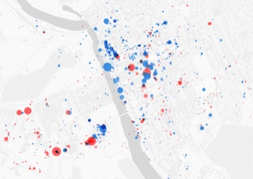
2020Porvoo Square BenchmarkALA ArchitectsSpacePDF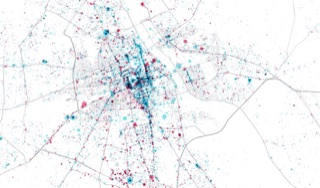
2019Warsaw Spatial Development ScenariosCity of WarsawSpace—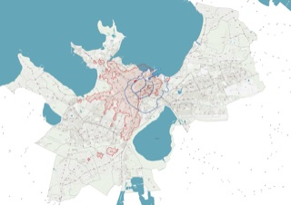
2019metaPARK — Tallinn Parking Technical NormativeCity of TallinnMobilityPDF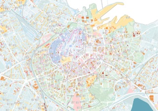
2019metaPARK — Tallinn Citywide Parking Count MapCity of TallinnMobilityPDF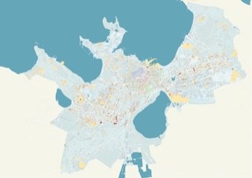
2019metaPARK — Performance-Based Parking Policy for TallinnCity of TallinnMobilityPDF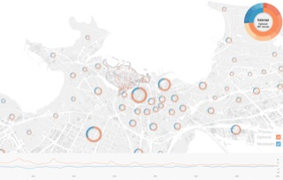
2019metaLINN — Tallinn City CentreCity of TallinnSpacePDF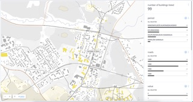
2019Heritage of Sipoo — Typomorphology MapMunicipality of SipooSociety—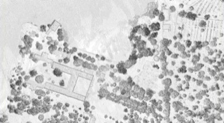
2019Lapinlahti 360 competition entry support——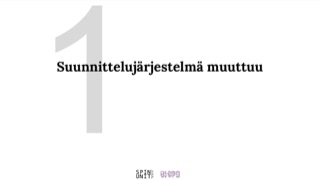
2019Vision for Land Use Monitoring — Finnish Ministry of the EnvironmentMinistry of the EnvironmentSpacePDF ×2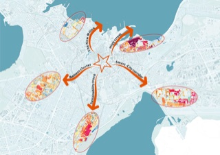
2019City Unfinished / The City UncomputedEstonian Academy of ArtsSocietyPDF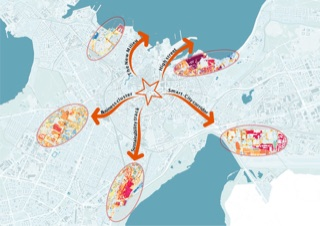
2019metaLINN+8 — Unfinished CityEstonian Academy of ArtsSpacePDF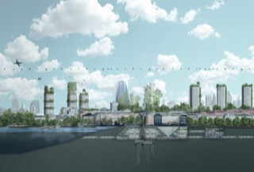
2019New FuturamaDemos Helsinki and MaaS GlobalSocietyPDF2018Mapping Twitter activity in the Baltic Sea region——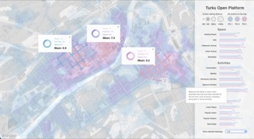
2018Turku Open Platform (TOP)City of TurkuSpacePDF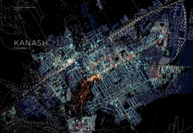
2017The Hidden Life of 32 Russian MonotownsStrelka KBSpacePDF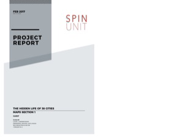
2017The Hidden Life of 38 Cities — World Cup 2018 HeritageStrelka KBSpace—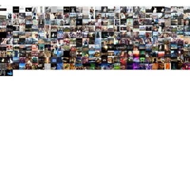
2017MediaCityUK Activity AnalysisUniversity of SalfordSpacePDF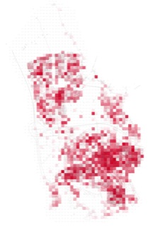
2017Voorbij de Winkelstraat — Schiedamkarres+brandsSocietyPDF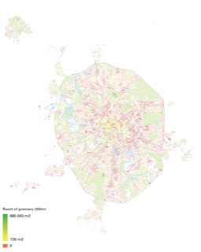
2016Moscow Green & Water Accessibility AnalysisStrelka KBSocietyPDF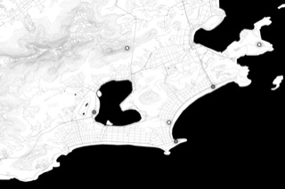
2016Rio de Janeiro Olympic Urbanism MapsPrinceton UniversitySpacePDF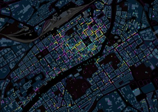
2015A Sense of Place — TurkuCity of TurkuSpacePDF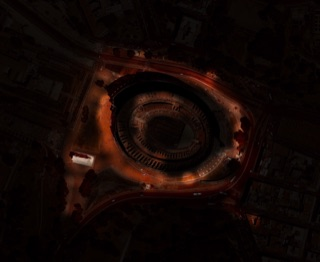
2015Colosseum Night Lighting MapSapienza University of RomeSpace—2015TAB-Lab — Tallinn Architecture Biennale 2015Estonian Centre of ArchitectureSociety—2014Tallinn Cycling & Morning Paths (2014 update)None — independent researchMobility—2014Crime, Society and Urban Design (CPTED)Estonian Police and Border Guard BoardSocietyPDF ×22014CONTOUR — Tallinn SeasideNone — competition/research entrySociety—2013From Ballroom to Dead End — Tallinn Night MapNone — academic conference researchSpacePDF2013Edise Concept PlanOÜ Revino AiandSpacePDF2012Bike Paths — Tallinn (2012)None — independent academic researchMobility—No projects match — clear the legend filter above.